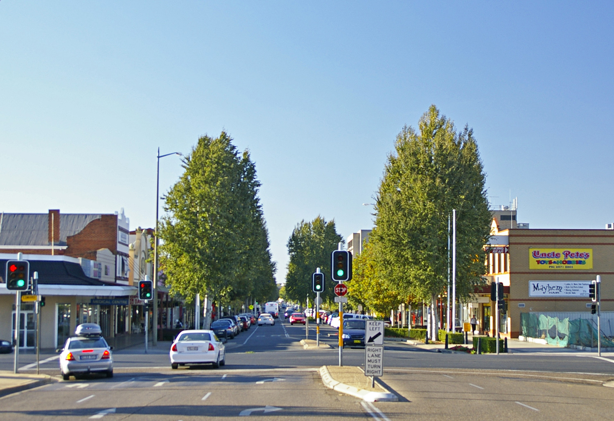

WAGGA WAGGA NSW
We build clean, high-performing websites that help businesses in Wagga Wagga stand out, get found on Google, and turn visitors into real enquiries.
Get a QuoteWagga Wagga is one of the largest regional centres in NSW, with a growing number of businesses competing for attention online. If your website doesn’t stand out quickly, customers will move on.
Whether you're a tradie, café, or service-based business, your website needs to clearly show what you do, build trust, and make it easy for customers to contact you. Most websites fall short because they’re outdated, slow, or not built for how people actually search.
We build clean, modern websites designed specifically for businesses in Wagga — focused on visibility, simplicity, and turning visitors into real enquiries.

Plumbers, electricians, builders and contractors competing for local jobs.
Businesses that need to stand out in a busy and competitive local market.
Hairdressers, mechanics, health and service-based businesses.
Structured to help your business appear in Wagga Wagga searches.
Designed for phones, where most customers are searching.
High-performance websites that load quickly and keep visitors engaged.
Based in Junee, we work closely with businesses across Wagga Wagga and surrounding areas.
That means you’re not dealing with a big agency — just a simple, hands-on approach focused on getting results for your business.
If you're in Wagga Wagga and want a website that actually generates enquiries, get in touch for a simple, no-pressure chat.
Get a QuoteABN: 41 946 218 773